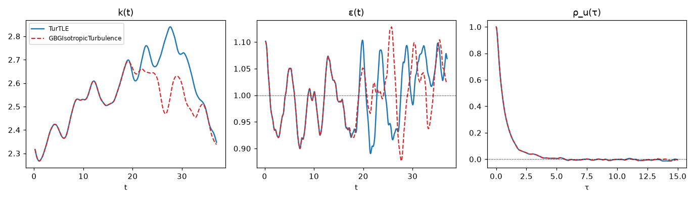
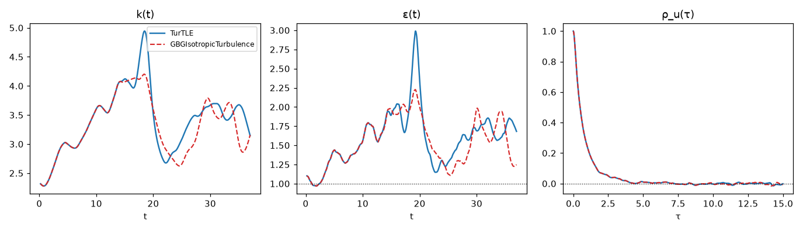
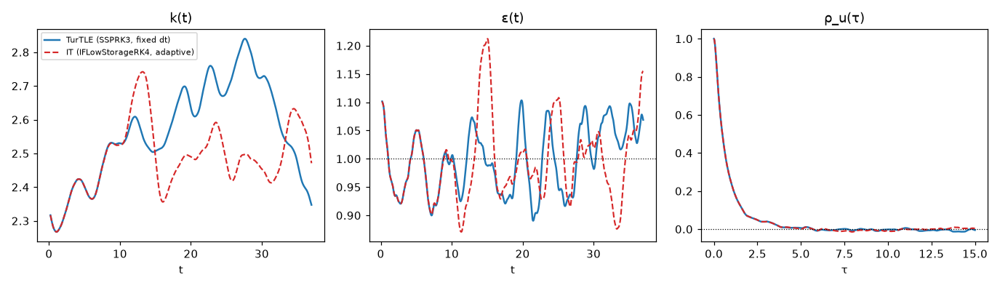

Validation — code-to-code comparison against TurTLE
Both legs of the comparison have run and the results below are measured. The initial state and all five reference-data files are published as release assets; every number on this page is reproducible from them with the scripts in the repository's validation/ directory.
The package is validated against TurTLE — an independent, production pseudo-spectral DNS code (Lalescu et al., An efficient particle tracking algorithm for large-scale parallel pseudo-spectral simulations of turbulence, Comput. Phys. Commun. 278, 108406, 2022) — run at an identical physics point, with the same time-stepping tableau, an exactly matched dealiasing filter, the same initial state, and the same $10^4$ tracer particles. Under those conditions the two codes solve the same discrete system up to one deliberate difference of route: TurTLE's NSVEparticles evolves the vorticity formulation while this package evolves the velocity (rotational) form. The two solutions therefore separate not from pure roundoff but from that formulation-level seed (measured $\sim 10^{-12}$ after one time unit), growing at the flow's Lyapunov rate — a finite window of exact tracking, followed by statistical agreement. Both behaviors are quantified below.
The comparison used TurTLE 8.2.1, its current release at the time.
The physics point
Both codes run one forced, stationary case of homogeneous isotropic turbulence:
| quantity | value | notes |
|---|---|---|
| grid, box side | $128^3$, $L = 2\pi$ | |
| precision | Float64 both codes | |
| viscosity | $\nu = 9.032 \times 10^{-3}$ | from the criterion below |
| forcing | constant power $\varepsilon_{\mathrm{target}} = 1$ into shells 1–2 | $\varepsilon = 1$ exactly at stationarity |
| dealiasing | smooth (Hou–Li) filter, exactly matched | see below |
| field scheme | IFSSPRK3 ⇔ TurTLE's native SSPRK3 | same tableau and stage arrangement |
| timestep | fixed $\Delta t = 2 \times 10^{-3}$ | identical in both codes |
| particles | $10^4$ tracers, fourth-order Adams–Bashforth, cubic-spline interpolation | identical in both codes |
| window | 18,400 steps = 36.8 time units ≈ 14.9 $k/\varepsilon$ | from the frozen handoff state |
The viscosity is set by the resolved resolution criterion $\kappa_{\max}\eta = 1.5$ (resolved edge times Kolmogorov microscale): under the smooth filter that edge is 0.8 of the Nyquist wavenumber, $\kappa_{\max} = 0.8 \kappa_{\mathrm{Ny}} = 51.2$ (the per-step filter damping overtakes the viscous rate $\nu\kappa^{2}$ there), so $\eta = 1.5/51.2$ and $\nu = (\varepsilon\eta^{4})^{1/3} = \eta^{4/3}$. The grid-band figure is $\kappa_{\mathrm{Ny}}\eta = 1.875$. (TurTLE's kMeta = 1.476 differs in normalizing its cutoff by $N/2 - 1$ instead of $N/2$, for $N$ grid points per axis.) Because the forcing fixes the injection rate, $\varepsilon$ is an input; the velocity scale $u'$ and $\mathrm{Re}_\lambda$ are outputs — their agreement is tested.
Matching the smooth filter exactly
Both codes damp each mode by $\exp(-s (\kappa/\kappa_{M})^{36})$, but they normalize differently: TurTLE by $\kappa_{M} = (N/2 - 1)$ (its highest mode with a nonzero conjugate partner), this package by the Nyquist $N/2$. The two filters are made identical to machine precision by choosing this package's strength as
\[s = 36 \Bigl(1 - \frac{2}{N}\Bigr)^{-36},\]
which at $N = 128$ gives $s = 63.463$ — the value the run uses with HouLi(order = 36, strength = 63.463).
The shared initial state, and the import witnesses
Both codes started the comparison window from the same TurTLE-generated state: a 50-turnover warm-up, then $10^4$ tracers seeded and advanced 100 steps so the fourth-order Adams–Bashforth integrator carried an authentic sample history. The joint state — the vorticity field in spectral representation, the tracer positions, and the four-slot history — was frozen as handoff_initial_state_iter100.h5. TurTLE continued from it natively; this package imported it: an axis permutation between the storage layouts, an amplitude rescale (TurTLE stores Fourier mode amplitudes; this package stores the unnormalized-transform convention — a factor $N^{3}$), the inverse curl $\hat{\boldsymbol{u}} = \mathrm{i} \boldsymbol{\kappa} \times \hat{\boldsymbol{\omega}} / \lvert\boldsymbol{\kappa}\rvert^{2}$, and the tracer positions and history into the run's tracers and observables cache.
Every step of that import is witnessed, not assumed:
| witness | result |
|---|---|
| state fidelity: $k$ and $\varepsilon$ of the imported state vs TurTLE's own $t_0$ sample | relative difference 0.0 (bit-exact) |
| curl round trip: $\nabla\times$ applied to the recovered velocity vs the injected vorticity | $1.4 \times 10^{-16}$ |
| interpolation parity: $\boldsymbol{u}(t_0, \boldsymbol{X}_0)$, the velocity at the tracers' handoff positions, sampled by this package's Catmull–Rom vs TurTLE's stored I4O3-kernel sample | $1.6 \times 10^{-14}$ over all $10^4$ tracers |
| Adams–Bashforth history slot order | pinned bitwise against TurTLE's stored per-step samples |
Results
Energy and dissipation, $k(t)$ and $\varepsilon(t)$

The window means $\langle\cdot\rangle_T$ over the 14.9 turnovers compare as follows (each code its own realization after decorrelation):
| quantity | this package | TurTLE | relative difference |
|---|---|---|---|
| $\langle\varepsilon\rangle_T$ | 0.9990 | 0.9987 | $3 \times 10^{-4}$ |
| $\langle k\rangle_T$ | 2.517 | 2.565 | $1.9\%$ |
| $u'$ | 1.295 | 1.308 | $0.9\%$ |
| $\mathrm{Re}_\lambda$ | 68.4 | 69.7 | $1.9\%$ |
The dissipation means agree to $3 \times 10^{-4}$ because both are pinned by the identical forcing; $k$, $u'$ and $\mathrm{Re}_\lambda$ differ at the percent level, which is the sampling scatter of two 15-turnover realizations of the same statistics.
Pointwise, the two solutions track and then separate exactly as deterministic chaos requires:
| $t$ | relative $\lvert\Delta k\rvert$ |
|---|---|
| 0 | 0 (identical state) |
| 1 | $6 \times 10^{-12}$ |
| 5 | $1 \times 10^{-10}$ |
| 10 | $2 \times 10^{-7}$ |
| 20 | $1.3 \times 10^{-2}$ |
| 36 | $1.1 \times 10^{-2}$ |
Ten significant digits of agreement persist through two full turnovers; the subsequent exponential growth is the flow's Lyapunov divergence acting on the $\sim 10^{-12}$ formulation seed, and the saturation level is the flow's own fluctuation amplitude — the two curves ride the same band with independent phases.
Lagrangian velocity autocorrelation, $\rho_u(s)$
The estimator is the single-origin ensemble form,
\[\rho_u(s) = \frac{\langle \boldsymbol{u}(s)\cdot\boldsymbol{u}(0) \rangle}{\langle \lvert\boldsymbol{u}(0)\rvert^{2} \rangle},\]
the dot product averaged over the $10^4$ tracers with $\boldsymbol{u}(0)$ frozen at the handoff instant. This package computes it online in the callback passed to run! (the initial sample is stored once; each instant contributes one scalar); TurTLE's curve is computed from its stored trajectory samples with the identical formula. Because both codes share $\boldsymbol{u}(0)$ and the particles, the curves are comparable realization to realization:
| $s$ | $\rho_u$ (both codes) | $\lvert\Delta\rho_u\rvert$ |
|---|---|---|
| 0.5 | 0.490 | $1.3 \times 10^{-11}$ |
| 1.0 | 0.241 | $4.7 \times 10^{-10}$ |
| 2.0 | 0.066 | $5.5 \times 10^{-10}$ |
| 5.0 | 0.006 | $1.9 \times 10^{-5}$ |
The ensemble average is far more robust to the trajectory-level phase scrambling than any single trajectory: the curves are indistinguishable through the entire physical decay, and the largest differences ($\sim 2 \times 10^{-2}$) occur only beyond $s \approx 10$, where $\rho_u$ itself is statistical noise of that size.
Robustness across forcings: the Linear (Lundgren) pair
The whole comparison was repeated with a different forcing law — the band-limited linear (Lundgren-type) forcing $\boldsymbol{f} = A \boldsymbol{u}$ on the same shells, with the fixed coefficient $A = 0.42386263 = \varepsilon_{\mathrm{target}}/(2k_{\mathrm{band}}(t_0))$, the target injection rate over twice the handoff band energy (this package's Linear(rate = A) ⇔ TurTLE's forcing_type = "linear", famplitude = A) — from the same frozen handoff and the same $10^4$ particles. Unlike the constant-power law, this unanchored forcing neither reads the state nor pins the injection, so energy and dissipation are entirely outputs.

- The agreement has the same structure. The solutions track to eight digits at $t = 5$ and six at $t = 10$ (relative $\lvert\Delta k\rvert$ $1.6 \times 10^{-9}$ at $t = 1$, $2 \times 10^{-8}$ at 5, $3.7 \times 10^{-6}$ at 10), then separate at the Lyapunov rate. The divergence seed is $\sim 500\times$ the constant-power pair's, and identifiably so: this package folds the steady $A$ into its integrating factor (exact), TurTLE carries the term explicitly through the Runge–Kutta stages — the same continuous physics along two discrete routes, differing at that term's truncation level. $\rho_u$ again overlays to $2 \times 10^{-10}$ at $s = 0.5$ and $8 \times 10^{-6}$ at $s = 5$.
- The unanchored equilibrium wandered — identically in both codes. With fixed $A$ the band self-amplifies until the cascade balances it: both codes migrated to a hotter state ($\langle k\rangle_T \approx 3.4$ from 2.5, $\langle\varepsilon\rangle_T \approx 1.6$ from 1.0), agreeing on the new attractor's statistics to $\sim 3\%$ — the larger scatter reflecting linear forcing's larger, slower energy fluctuations, visible in the $k(t)$ panel.
- The amplitude estimate illustrates why anchored forcings exist. $A$ was chosen from the instantaneous handoff band energy; the fixed-$A$ balance settled at a larger one ($\langle k_{\mathrm{band}}\rangle_T \approx 1.87$ from 1.18), so $\langle\varepsilon\rangle_T = 2A\langle k_{\mathrm{band}}\rangle_T \approx 1.59$ rather than 1. Both codes agree precisely on this migration, the physics of unanchored linear forcing rather than a discrepancy.
Robustness across integrators: IFLowStorageRK4 at its adaptive step
The third repetition changes the integration machinery instead of the forcing: the same frozen handoff, the same $10^4$ particles, the same constant-power forcing — but this package advances with IFLowStorageRK4 (the Carpenter–Kennedy fourth-order low-storage scheme) under its adaptive CFL controller rather than the fixed matched timestep. TurTLE's leg is the original fixed-step reference. Trajectory-level identity is off the table by construction — the two runs share no time grid — so what this tests is statistical agreement under genuinely different discrete routes.

- The window took 6,739 adaptive steps at mean $\Delta t = 0.00546$ — $2.73\times$ the reference legs' fixed $2 \times 10^{-3}$ (the fixed value was chosen for cross-code matching, well inside even RK3's ceiling), completing the same 36.8 time units in 174 s against the fixed-step leg's 265 s on the same GPU.
- The agreement has the same structure, with an instructive seed ladder. $k$ and $\varepsilon$ track at $10^{-6}$–$10^{-5}$ relative through $t \approx 5$, separating from a seed of $\sim 6 \times 10^{-7}$ at $t = 1$ — the truncation-level difference of two tableaux on two step sizes, against $\sim 10^{-12}$ for the matched-tableau pair: same physics reached by discretizations of increasing unlikeness, separating at exactly the level each unlikeness predicts. Window means agree to $0.2\%$ in $\langle\varepsilon\rangle_T$ and $3\%$ in $\langle k\rangle_T$ (two 15-turnover realizations of the same statistics).
- $\rho_u$ is again indistinguishable through the physical decay: $5 \times 10^{-6}$ at $s = 0.5$, $2 \times 10^{-6}$ at $s = 1$, $10^{-5}$ at $s = 2$ — computed in the run's callback on the irregular adaptive time grid, against TurTLE's fixed-grid post-hoc curve.
Deliberately not compared in this round
Shell-averaged spectra $E(\kappa)$ and the velocity-derivative skewness were not collected in the comparison window; they are a natural extension, not a silent omission.
Cost
The identical leg — 18,400 steps with $10^4$ tracers — took TurTLE 92 minutes (8 MPI ranks × 2 threads on a 12-core CPU) and this package 265 seconds on a single AMD RX 7900 XTX (14.4 ms/step, Float64).
Reproducing the comparison
The six published files (release assets; verify the hashes):
repo=https://github.com/GrigorySarnitsky/GBGHomogeneousTurbulence.jl
base=$repo/releases/download/turtle-comparison-v1
curl -LO $base/handoff_initial_state_iter100.h5
curl -LO $base/turtle_reference_data.h5
curl -LO $base/gbgit_reference_data.h5
curl -LO $base/turtle_linear_reference_data.h5
curl -LO $base/gbgit_linear_reference_data.h5
curl -LO $base/gbgit_rk4adaptive_reference_data.h5
sha256sum *.h5
# handoff_initial_state_iter100.h5
# 02c2d2530a731f0701608b4fb219f28bc9006f8d2ac39f4c02daef228823e82f
# turtle_reference_data.h5
# fa9633599e2f86411a9712ad75c0fad69cb047626d4f59e02de5a2802ca42211
# gbgit_reference_data.h5
# 394d68ca9f6bd066eb34b484f826c684df605c6901e1eb7364d756ae1b04bf28
# turtle_linear_reference_data.h5
# 6b8d15e9944c3ec12b7a0a451805b62351623fd9830d98ea3aad303a205115cd
# gbgit_linear_reference_data.h5
# bd192fdcca3bbe75798818bf0193af17846286e7cb3cc00d95514dc6db6670c2
# gbgit_rk4adaptive_reference_data.h5
# 1629764125ab00230d9a6d32fe710242075bb57264aea828113a0fe258094ca9Each reference file is self-describing: datasets t, k, ε, τ (the lag $s$, labelled τ on the plots), ρ_u, with the definitions, run provenance, and the initial state's hash in its attributes.
The scripts live in the repository's validation/ directory and run in a working directory holding the downloaded files: collect_driver.py (TurTLE's leg; needs a TurTLE 8.2.1 installation with MPI, parallel HDF5, and FFTW), it_leg.jl (this package's leg — the import, the witnesses above, and the instrumented run; the storage backend is one constant), and overlay_plots.py (the figure). This package's leg in outline:
using GBGHomogeneousTurbulence
sim = Simulation(domain; viscosity = 9.032e-3,
velocity_forcing = ConstantPower(injection_rate = 1.0,
lowest_shell = 1, highest_shell = 2),
field_integration_scheme = IFSSPRK3(),
particle_integration_scheme = AdamsBashforth(order = 4),
state = imported_state, tracers = imported_tracers)
run!(observation, sim; dt = 0.002) # the callback records k, ε, and ρ_u online